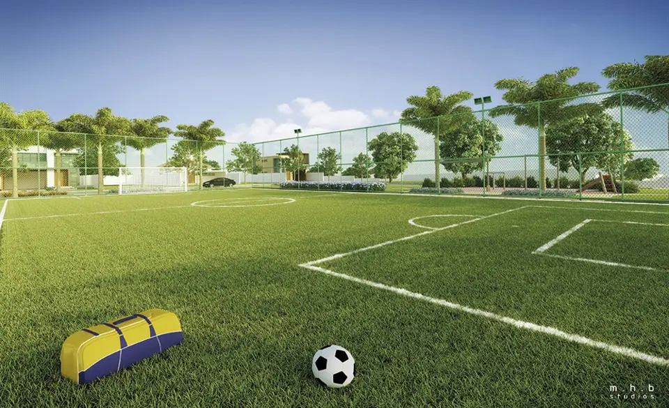

Imagens


Galeria
Imagens ilustrativas, de caráter artístico, conforme material da incorporadora.

Conheça este incrível empreendimento situado no Campo Grande, um dos maiores bairros do Rio de Janeiro.
Conheça este incrível empreendimento situado no Campo Grande, um dos maiores bairros do Rio de Janeiro. O bairro Campo Grande possui um dos melhores Índices de Desenvolvimento Humano (IDH) da zona oeste da cidade e se tornou uma das áreas mais investidas pela prefeitura do município nos últimos anos. O Grand Park Clube Residencial proporciona a você a sensação de estar perto da natureza, sem deixar de lado a infraestrutura de uma grande cidade. Uma prova disso é que em apenas 2 minutos você chega a uma padaria, localizada na Estrada da Caroba, e em apenas 5 minutos chega a um estabelecimento da rede de Supermercados Carrefour. Ou seja, muita comodidade e conforto para você fazer suas compras sem dores de cabeça. Agências bancárias são encontradas sem dificuldades em um raio de 2km, inclusive dentro do Passeio Shopping, importante complexo que reúne diversas lojas para todos os gostos. Além disso, existem muitas escolas que estão ao redor do empreendimento. Isto facilita a rotina das famílias, que possuem maior facilidade para se locomoverem aos centros de ensino. Os imóveis do Grand Park Clube Residencial possuem área útil de 198 a 357m².
Metragens, tipologias e disponibilidade conforme material oficial da incorporadora, sujeitos a alteração sem aviso. Valores e condições confirmados na tabela vigente. Seleção e atendimento: Paulo Cotrim, CRECI-RJ 77677-F.
Imagens ilustrativas, de caráter artístico, conforme material da incorporadora.